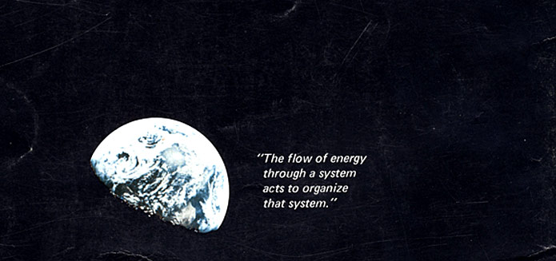

As we arrive at the border between this landscape and the unmapped land beyond, we feel a weight in our pockets, previously unnoticed. Unbeknownst to us, we have been handed, reverse-pickpocketed if you will, material encapsulations of the tools of modernity. Reach into your left pocket and what you find is a brass cylinder, engraved all over with mathematical formulae and symbols both foreign and familiar. On both ends of the cylinder are roughly carved lenses. You lift the cylinder to your right eye, peer through, and out of and above the expansive landscape rises a swirling twirling kaleidoscopic network of dew-draped spider webs, a vibrant mist.

The master's tools will never dismantle the master's house.
Audre Lorde
I would like to preface this by saying that I am not a data analyst. I would like to. However, I actually am a data analyst, at least on paper, as a profession. Therefore, I will instead preface this by saying that the reader should not expect this to adhere to anything resembling statistical rigour or analytical robustness. Someone, probably French, once said something along the lines of a virtuoso simply being an amateur with lively curiosities. Call this, then, a virtuosic exploratory endeavour, applying data analysis to my predicament landscape. Let us begin with a simple question: what can the landscape tell us?
In extremely simplified terms a predicament with many outgoing connections is a driver, a predicament with many incoming connections is a sink, and a predicament with many total connections, both outgoing and incoming, is a hub. In disgustingly, excruciatingly simplified terms a driver is that which drives other predicaments, a sink is what other predicaments "lead to/result in", and a hub is a predicament which plays a key role in the landscape. Let's look at the top 10 drivers and sinks.

And while we're at it, let us also list the top 10 hubs:

In other words, predicaments like Moloch, Finite games, Naive progress narrative, The spectacle, how we get Access to food, and our Business-as-usual narrative all drive the dynamics and behaviours of modernity, resulting in a Failure to take responsibility, Mistreatment of other humans, Ignored externalities, and a recursive furthering of the Naive progress narrative. There is also a clear Lack of balance, not just in our ways of living but in all systems, manmade ones and natural ones subject to manmade disorder, all contributing to our present Wisdom crisis and corresponding Sense-making crisis. The hubs unsurprisingly contain many of the top drivers or sinks but some new predicaments climb up to the top, namely Profit and the Ecological crisis, holding keystone positions in the landscape. Remember, problems can be solved, predicaments need to be managed.
There exist an infinitude of ifs and buts, but if we attempt some concluding remarks about drivers, sinks, and hubs it is this: no landscape management which leaves drivers or hub-predicaments untouched will succeed. Furthermore, no landscape management which doesn't purposefully mitigate or affect the sinks is even worthy of discussion. We must challenge the dynamics of Moloch or our present methods of getting Access to food and we must do so with nothing but the noblest intentions, going past our Failure to take responsibility and finding a path through our Sense-making crisis, without the use of Violence or the Mistreatment of other humans. Of course, the landscape goes deeper but, nonetheless, the message is stark.
What about the predicaments that fall at the bottom when sorting for drivers, sinks, or hubs? Are they unimportant? This is where we must acknowledge the fact that this landscape can be hindered by my own biases, reflecting what I deem important or simply in my fields of awareness. There is, however, an additional issue in how the landscape can distort the importance of certain predicaments in reverse relation to my biases. Let's say I believe Climate change and Ecological crisis to be incredibly important, which I do. It is then realistic to assume I will have many "sub-predicaments" that could fall within those predicaments, like Ocean acidification, Microplastics, Biodiversity loss, and Desertification to just name a few. These "more expansive" predicaments then appear less important due to their scope and/or detailed nature. It in no way makes them less crucial to manage, we won't manage Climate change or Ecological crisis unless we manage what they consist of and what drives them. There may definitely be predicaments that are "less important" to manage, at least directly, such as modernity's state of Art and Craft, both of which lie at the very bottom of these orderings. Interestingly though, without getting ahead of myself, both Art and Craft as management methods are most likely highly impactful for managing parts of the landscape.
There is much more to say about the different predicaments' placement in different sortings and orderings but let us instead take a look at a type of analysis that partly bypasses the issues of "sub-predicaments" and certain biases.
Do you find the predicament landscape to be too vast, containing too many predicaments? Are you starting to feel queasy looking at the buffet, having only just picked your merry way through the salad aisle? Do not fret, community detection is here to save you from your moral and intellectual weakness. How about 16 predicaments? Let's try naming them...
Where did those come from? Waving my magic wand of data analysis at the 250 original predicaments grouped them into 16 communities consisting of larger predicaments whose contents somehow connect more closely to eachother. Societal issues, for example, is made up of Colonialist narratives, Inequality, Tragedy of the vanishing commons, Migration, Violence, Blaming the people, Laws, Mistreatment of other humans, Views on human nature, Pandemics, Fear, Identity, Polarisation, Social erosion, Surveillance, Avoiding uncertainty, Genocide, Imprisonment, National borders, Dispositionism, Hobbesian views, Racism, Madness of safety, Culture wars, Discrimination, LGBTQ+, and Sexism. Technological dystopia is made up of Algorithmic curation, Constant connectivity, Signal-to-noise ratio, Social media, Artificial intelligence, Attention hijacking, Big tech, Breakdown of information infrastructure, Disinformation, Propaganda, Information isn't knowledge, Naive techno-optimism, Naive techno-pessimism, News, and Data privacy. Not entirely spot on but interesting nonetheless.
I have previously made clear that the number of predicaments in the landscape is mostly arbitrary. After all, no one can truly say how long a coast line is. As the example of community detection above illustrates, we could just as well have listed fewer predicaments and still captured much of it. Going to the very extreme we could attempt to boil everything down to two predicaments. How we manage our inner world and our outer world. Or maybe three predicaments? How we deal with what is under the surface, on the surface, or above the surface. Five? A hundred? As can already be seen on the scale of our 250-landscape, some predicaments are clearly sub-predicaments of others, Ecological crisis being a clear example. Continuing on from this insight and pondering what a landscape with 500 or a 1000 predicaments could look like we can do the simple exercise of trying to dissect predicaments further. Pandemics could join or split into predicaments like Industrial slaughter, Globalisation, open air markets, caged animals, exoticism, lack of hygiene, lack of food control, anti-vaccine propaganda, unreliable healthcare, solipsism, schadenfreude, lack of knowledge about health, large school classes, stress, commuting, bad ventilation, bad air quality, autoimmune diseases, immunocompromised population, unprotected elderly, and the list could go infinitely on and on.
How can we improve our problem-solving and predicament-management odds by using the mental model of a predicament landscape? A predicament landscape introduces a much needed increase in complexity and interconnectedness that helps us better evaluate the effects of a particular intervention and its upstream and downstream impacts. See that moving layer of fog over by that creek? Look closely and I'll explain what it is you see.
An economical model was recently published whose stated purpose was creating a healthy planet. It would do this by changing free-market dynamics in the global economy through increased taxes based on natural resource consumption while decreasing labour taxes. Simply put, products using non-renewable resources would be expensive to produce and consequently costly to purchase, thereby aligning capitalism with the Planetary boundaries. Let's take a closer look at how this might help manage the state of the landscape.
Among others, the model has potential direct management effects on the following predicaments:
On the surface that's quite an impressive list and, to be a little less characteristically pessimistic and idealistic, I'd say the model itself is promising as an intervention among other interventions. Disincentivising the production and consumption of unsustainable products and services sounds like a real no-brainer. So why have I chosen this model for a closer look? Where and why does it break down? Let's ponder which predicaments it doesn't manage that simultaneously affect its ability to manage the predicaments listed above:
It might appear damning but, remember, we require a multitude of management methods. This singular method is not going to flip the entire landscape on its head. It has strengths and promises, yes, but it's also facing some difficult challenges. Simplifying things further, which of the countering/unmanaged predicaments above stand out the most? I'd argue Growth. Growth is perhaps the single most defining aspect of our economy and I'd further make the case that any method claiming to manage the state of the economy that doesn't manage growth has some serious re-working to do.
How, then, could we conclude this short story on a proposed management method that aligns capitalism with planetary boundaries through tax intervention? It is an interesting and promising idea which I look forward to reading more about as it gets backed by more research, testing, modelling, and real-world application attempts. Further, I'd like to see how it manages to internalise resources whose harm spans near-infinite time scales, like PFAS or material extraction which destroys complex ecosystems, among other similarly unquantifiable things. Lastly, I'd want Growth and overall Profit incentives included in the discussion of the model or see suggestions of other interventions placed alongside this model that directly address these keystones of the economy.
In general, focusing on any one predicament or management method gives an inadequate view, a more solutionist view rather than the landscape view I'm proposing. It is, after all, not the nodes of the landscape which matter most. What, then, does matter most?
If I could ensure that you left this landscape with one single insight it would be this: it is all connections, all the way down, all the way up. Imagine it like this. Zoom far enough out and the entire landscape becomes one "node", the Predicament Landscape-node, potentially linked to other landscapes of other kinds. Zoom far enough into a single node and you'll notice that it is made up of smaller nodes with connections between them, together making up the singular node in view. The only thing, which isn't then a thing, that is of any substance and worth is the web, no, the flow of connections. If you're struggling with your health and you start exercising you've just altered the flow upward, perhaps affecting personal predicaments like health, self-critique, body-weight, onward to shifting away from an external locus of control, perhaps channelling flow towards battling your Lack of agency, Mental health, even preventing future burdening of the Healthcare system, onwards and upwards, your improved Mental health affects your previous Lack of empathy, Parenting, occasional Emotional crisis, and as your Parenting improves you suddenly stop seeing your life as a struggle against Lack of time and Lack of love and you discover outlets that counter Lack of communities which in the long run aids others in managing their own landscapes. A tad idealistic and grand, yes, but the point is not whether it would or would not happen this way, it is the flow and its direction.
In order to manage a predicament landscape you must discover actions that positively alter the flows of the landscape. These actions will act as an overlaying field with the power of changing the entire nature of the landscape.
Which are these actions? What is this Overlay? Fortunately, I've discovered something beyond that mountain range to the East. What do you say, are your feet rested? Are you ready to continue our journey?
